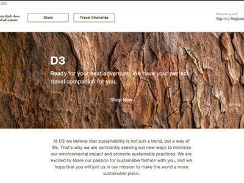
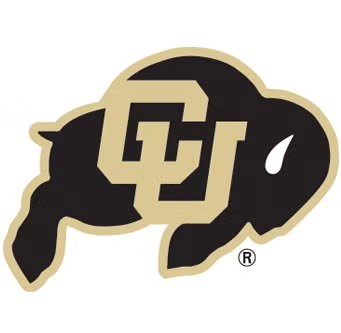
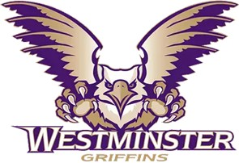
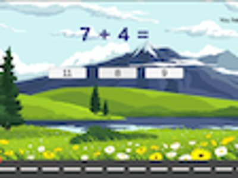
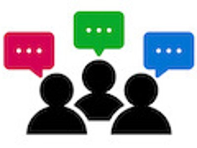
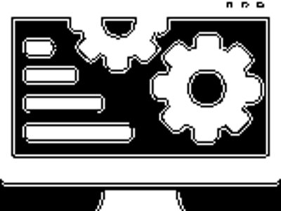
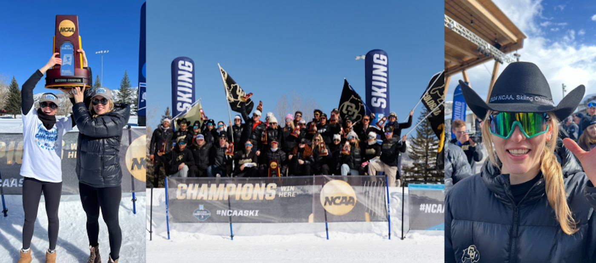
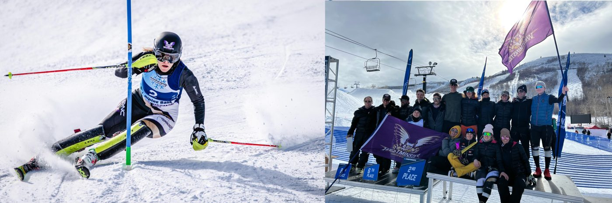
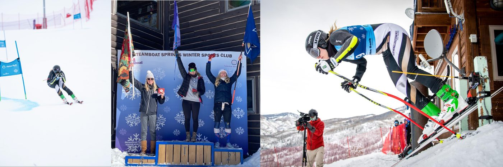
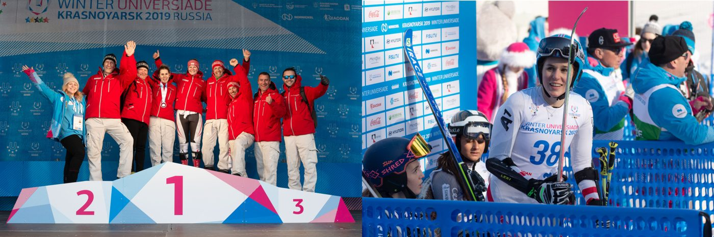

{kind=link}

Senior Project
E-commerce website built with Django, Python, CSS & HTML — May 2023.
My name is Denise Dingsleder and I hold a Master of Finance from the Leeds School of Business at the University of Colorado Boulder, and a Bachelor's in Finance and Computer Information Systems from Westminster College. During my academic journey, I was also a Division I student-athlete in Alpine Skiing.
I'm currently a Senior Business Intelligence Analyst at Goldman Sachs, Global Banking & Markets, focused on data engineering, financial validation, and analytics infrastructure.
I'm creative and curious by nature — in my spare time I love designing and tailoring outfits and accessories like backpacks. I'm also very into sports and staying active, having been a competitive athlete myself.
Technical Skills: SQL, Alteryx, Tableau, Python, R, Java, APIs (JSON), ETL & Workflow Automation.
Finance & Controls: Financial Validation, Fee & Transaction Analytics, Data Governance, Risk & Performance Metrics Design.
Project Management: Agile, Jira, PMO Reporting, Advanced Excel.
Languages: German (Native), English (Fluent), Spanish (A1).
June 2023 – Present · Salt Lake City, Utah
Award: 1st Place, Goldman Sachs Innovation Pitch Challenge – designed an AI-enabled internal data sourcing solution.
Interned in the Global Markets division within the FICC/FCO Business Intelligence team, gaining proficiency in Alteryx. Contributed to automating coding-accuracy emails, building a risk dashboard in Tableau, and developing a data wireframe to streamline data sources.

University of Colorado Boulder, Leeds School of Business · May 2024
Relevant coursework: Financial Modeling, Quantitative Methods, Portfolio Theory, Risk Analytics, Macro/Micro Economics.

Westminster College, Bill & Vieve Gore School of Business · May 2023 · Salt Lake City, Utah
Relevant coursework: Data Science, Linear Algebra, Data Warehousing, Corporate Finance, Investment Strategies & Application.
Award: 3rd Place, CFA Research Challenge.

E-commerce website built with Django, Python, CSS & HTML — May 2023.

A Mario-Kart-style math game built in Unity — May 2023.
A Java Asteroids-style game with custom visual effects — May 2022.

A real-time chatroom built in Java for Computer Networks — December 2022.

A SQL database app covering Division I alpine ski race data — December 2022.
Before finance, I raced Division I alpine skiing for four years, reaching a Top-100 world ranking — a background that shaped how I handle pressure, preparation, and performance under scrutiny.

NCAA Championships 2024, Steamboat (USA)
National Champion · All-American Title: Giant Slalom · RMISA Champion: Giant Slalom
This national championship was especially meaningful, marked by an invitation to the White House in recognition of the achievement.
Newcomer of the Year Award – University of Colorado Boulder Ski Team, 2023–24 season.

NCAA Championships 2022, Park City (USA)
All-American Title: Slalom · All-American Title: Giant Slalom

RMISA Championships 2022, Boulder (USA)
Gold: Slalom

University Games 2019, Krasnoyarsk (Russia)
1 Gold Medal: Parallel Slalom Team · 2 Silver Medals: Giant Slalom & Slalom
Skiing at a competitive level may be behind me, but staying active is still a big part of who I am:
I'm always happy to connect about opportunities in risk analytics, quantitative finance, or data-driven roles.
{kind=link}
{kind=link}
{kind=link}
{kind=link}